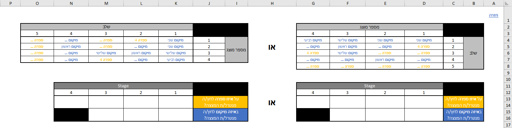
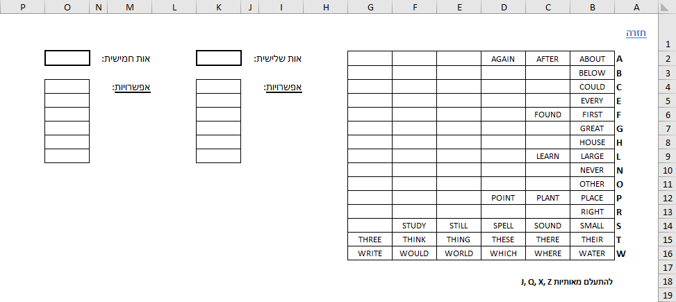
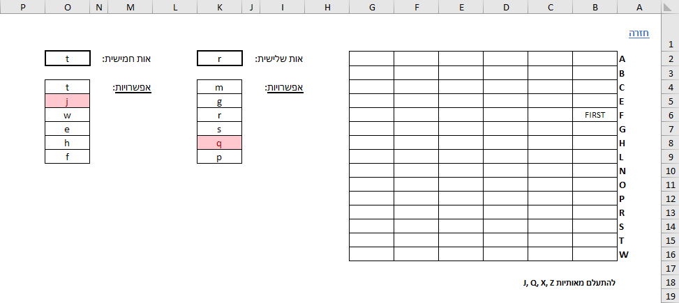

איך משתמשים?
גרסה אלטרנטיבית לשיפור הביצועים
אופן השימוש:
ערכת הכלים בנויה כך שכל מודול הוא גיליון אלקטרוני בפני עצמו. כדי לעבור ממודול אחד למשנהו, יש לעבור בין הגיליונות האלקטרוניים (ניתן להשתמש בקיצור המקשים Ctrl + PgDn / PgUp)
בנוסף למודולים, ישנם שני גיליונות אלקטרוניים נוספים: מנטרל/ת והקדמה, הכוללים עזרים למנטרל/ת ולתפעול ערכת הכלים כולה. הסבר מפורט על כל הגיליונות האלקטרוניים ניתן למצוא בהמשך.
בחלקו העליון של כל גיליון אלקטרוני (למעט הגיליון הראשי: הקדמה), ניתן למצוא כפתור "חזרה" בפינה השמאלית העליונה שיעזור לכם לגשת במהירות לגיליון ההקדמה.
מדוע דווקא קובץ .xlsx?
אמנם ישנם כלים שונים ומגוונים לניתוח יעיל יותר, אך הכלים הללו מפוצלים לשתי קבוצות מרכזיות:
- מדריכים כתובים, ללא שום תחכום.
- דורשים שימוש בתוכנות או בהתקנות חיצוניות מסוג כלשהו.
בעוד נדרשים בכלי מתוחכם יחסית, Microsoft Excel קיים אצל רוב אנשי העולם ומאפשר גישה רחבה לשימוש.
מנטרל/ת
גיליון אלקטרוני זה אינו מיועד עבורכם, אלא בכדי לסייע לחבר/ה שמנטרל/ת את הפצצה בזמן אמת. מדובר בארבעה עמודי A4 (מוכנים בתבנית נוחה להדפסה) המרכזים מידע שימושי שעשוי לעזור לו/לה במהלך הנטרול.
החשיבה העומדת מאחורי הנתונים המרוכזים היא ריבוי פעולות, כך שבעוד שתסייעו למנטרל/ת במודול מסוים, הוא/היא יוכלו לבצע מודולים נוספים בכוחות עצמם, ולחסוך זמן יקר.
הקדמה
גיליון ההקדמה מאפשר לכם לוודא שאתם מוכנים לסיבוב הבא. הוא מרכז את כל הדברים התפעוליים הנדרשים מהמומחה לפני תחילת העבודה.
איפוס גיליונות:
לפני שמתחילים בנטרול פצצה חדשה וכדי לחסוך זמן יקר, יש לאפס את הגיליונות האלקטרוניים הבאים:
- חוטים
- הכפתור
- חוטים מסובכים
- זיכרון
- מבוכים
- סיסמאות
- השדות בגיליון זה תחת הכותרת "בתחילת שלב"
מדוע אלה? משום שאלו הם הגיליונות האלקטרוניים בהם תשנו דברים באופן פעיל.
בתחילת שלב:
בתחילת המשחק, יש למלא נתונים מסוימים שיעזרו לך לנטרל את המודולים השונים:
| # | נתון | מודולים אותם משמש | אפשרויות הזנה |
| 1 | ספרה אחרונה במספר הסידורי | חוטים, חוטים מסובכים | 0-9 |
| 2 | מספר סוללות | הכפתור, חוטים מסובכים | 0-9 |
| 3 | האם יש אות ניקוד במספר הסידורי? | הרצל אמר (סיימון) | X, V |
| 4 | האם יש תוויות FRK? | הכפתור | X, V |
| 5 | האם יש מחבר מקבילי (Parallel)? | חוטים מסובכים | X, V |
בהתאם למודולים המופיעים בפצצה שלך, בתחילת כל משחק, מומלץ להזין לפחות את שני הפרטים הראשונים על ידי סריקה מהירה של צידי הפצצה.
הזנת המידע בשדות המתאימים תעדכן אוטומטית את המידע בגיליונות האלקטרוניים הרלוונטיים.
חוטים
Wires
מנטרל/ת הפצצה אומר/ת לכם את סדר צבעי החוטים, ואתם מזינים את צבעי החוטים בסדר המצוין.
כדי לחסוך זמן, במקום להזין את צבע החוט כולו, נדרשת רק האות הראשונה:
- א = אדום
- כ = כחול
- ל = לבן
- צ = צהוב
- ש = שחור
בתחתית ניתן למצוא סיכום של מספר החוטים שצוינו עד כה, המסייע בפעולות החישוב.
בהתאם לנתונים שתזינו, התוצאה הנדרשת תחושב מיידית. התוצאה תופיע בשורה הרלוונטית
(3 חוטים = שורה שלישית, 4 חוטים = שורה רביעית וכו').
תוצאה לדוגמה:
מידע נדרש:
כאמור בהקדמה, מודול החוטים דורש את הספרה האחרונה של המספר הסידורי. אם הזנתם את הנתונים בתחילת הסבב, לא צפויה להיות בעיה. לעומת זאת, אם שכחתם לעשות זאת - לא תוכלו לקבל את התוצאה עד שתזינו את הנתונים הנדרשים.
כדי לפשט את פתרון הבעיה, במקום לחזור לגיליון ההקדמה, תוכלו להזין את הנתונים בגיליון האלקטרוני עצמו, בטבלה מצד שמאל. לדוגמה:
במקרה שאתם רוצים משהו פשוט יותר, ניתן למצוא את ההסבר המופשט לחישובים שנערכו בתחתית הגיליון האלקטרוני.
הכפתור
The Button
מנטרל/ת הפצצה אומר/ת לכם את צבע הכפתור והתיאור שלו, ואתם אומרים אומרים לו/לה באיזו אפשרות לבחור.
לכפתור יש שתי אפשרויות:
- ללחוץ ולשחרר מיד
- החזקת הכפתור ושחרורו בתזמון מתאים
בחירת אפשרות מתאימה:
אם מתקיים אחד משלושת התנאים הראשונים, יש ללחוץ על הכפתור ולשחרר אותו מיד.
הערה: לכל אחד משלושת התנאים יש שני חלקים. רק אם שניהם נכונים, התנאי הוא בהכרח נכון.
לידיעתכם: ישנו מקרה קצה בו התנאי השלישי ל'ללחוץ ולשחרר מיד' עשוי להתקיים בעוד הכפתור יהיה לבן ועם מחוון 'CAR' מואר. במקרה זה, נדרשים להחזיק את הכפתור. המקרה מתואר בגיליון, אך הסיכויים שהוא יתרחש כמעט ואינם קיימים.
אחרת, יש ללחוץ על כפתור ולהחזיקו לחוץ עד רצועת הצבע תאיר בצבע. ברגע שמאירה, יש לשחרר את הכפתור בהתאם לצבע כך שהספרה המצוינת מופיעה בכל מיקום על גבי מונה הזמן:
- 5 = צהוב
- 4 = כחול
- 1 = כל רצועת צבע אחרת
מידע נדרש:
כאמור בהקדמה, מודול הכפתור דורש את מספר סוללות והאם יש תוויות FRK. אם הזנתם את הנתונים בתחילת הסבב, לא צפויה להיות בעיה. לעומת זאת, אם שכחתם לעשות זאת - לא תוכלו לקבל את התוצאה עד שתזינו את הנתונים הנדרשים.
כדי לפשט את פתרון הבעיה, במקום לחזור לגיליון ההקדמה, תוכלו להזין את הנתונים בגיליון האלקטרוני עצמו, בטבלה מצד שמאל. לדוגמה:
לוח מקשים
Keypads
מנטרל/ת הפצצה מתאר/ת לכם את ארבעת המקשים שרואה, ואתם אומרים אומרים לו/לה באיזה סדר ללחוץ עליהם.
נוספו שמות ידידותיים המתארים כל סימן וסימנים אשר מופיעים תמיד ראשונים/אחרונים מסומנים בהתאם.
הטבלה מקודדת בצבע כדי לעזור לכם לזהות כפילויות, אך הטבלה המקורית עדיין זמינה לצידה עבור אלה שמעדיפים אותה.
הרצל אמר (סיימון)
Simon Says
מנטרל/ת הפצצה אומר/ת לכם את סדר הצבעים המהבהב, ואתם אומרים אומרים לו/לה על אילו צבעים ללחוץ בהתאם.
נוספו צבעים וסמלים חזותיים להקלה בשימוש בטבלת המלל.
לאלה המעדיפים זאת, טבלה חזותית מופיעה לצד טבלת המלל.
מידע נדרש (לא באמת):
כאמור בהקדמה, מודול החוטים דורש את האם יש אות ניקוד במספר הסידורי. אם הזנתם את הנתונים בתחילת הסבב, לא צפויה להיות בעיה. לעומת זאת, אם שכחתם לעשות זאת - שאלו את מנטרל/ת הפצצה אם יש או אין אות ניקוד כדי לדעת באיזו טבלה להשתמש.
שעשועון מילים
Who's On First
שלב 1: מנטרל/ת הפצצה אומר/ת לכם את המילה המופיעה על הצג, ואתם מציינים את מיקום הכפתור שעליו/ה להקריא בפניכם.
שלב 2: מנטרל/ת הפצצה אומר/ת לכם מה היא המילה שמופיעה על הכפתור במיקום שציינתם, ואתם מקריאים את סדר המילים התואם למילה זו.
למרבה הצער, אין דרך יעילה לזכור את כל המילים התואמות.
שלב 1: המילים מסודרות בסדר עולה ומילים דומות מקודדות צבע.
שלב 2: המילים מסודרות בסדר עולה ומילים דומות מקודדות צבע. מילים שאינן נחוצות הושמטו.
הגדרות:
| # | הגדרה | תיאור | אפשרויות |
| 1 | הדגשת מילים דומות | מילים דומות יצבעו באותו הצבע להבחנה קלה | כן, לא |
| 2 | הצגת מילים פשוטות לקריאה | הצגת המילים באופן שיבדיל בין מילים דומות
נלקח מתוך טבלת "מילים פשוטות לקריאה" |
כן, לא |
זיכרון
Memory
מנטרל/ת הפצצה אומר/ת לכם את המספר המופיע על הצג, ואתם אומרים לו/לה על איזה כפתור ללחוץ מבין ארבע האפשרויות, במשך 5 פעמים.
בחרו את התצורה הנוחה לכם (ימין או שמאל) והזינו את הפרטים המתאימים בשדות התחתונים, להלן:
- על איזו ספרה לחץ/ה מנטרל/ת הפצצה? (הספרה המוצגת על גבי הכפתור)
- באיזה מיקום לחץ/ה מנטרל/ת הפצצה? (1 הוא המיקום השמאלי ביותר)
בטבלה העליונה תוכלו לראות את התוצאות עליהן נדרש/ת מנטרל/ת הפצצה ללחוץ.
- ספרה [1/2/3/4] = המספר המוצג על גבי הכפתור עליו יש ללחוץ
- מיקום [ראשון/שני/שלישי/רביעי] = מיקום הכפתור עליו יש ללחוץ (1 הוא המיקום השמאלי ביותר)
קוד מורס
Morse Code
מנטרל/ת הפצצה אומר/ת לכם את רצף הקווים והנקודות שמוצגים (המרכיבים מילה), ואתם אומרים לו/לה מה התדר המתאים למילה זו.
הטבלה הופשטה לכדי תרשים הדורש עד 3 האותיות הראשונות בכדי לקבל את התדר הרצוי.
לנוחיותכם, מצד שמאל ניתן למצוא את רשימת האותיות הנמצאות בשימוש ואת הטבלה המקורית.
הערה: מילים בעלות 6 אותיות סומנו באדום, שכן כל סיסמה מורכבת מ-5 אותיות בלבד.
חוטים מסובכים
Complicated Wires
מנטרל/ת הפצצה אומר/ת לכם את הרכב כל חוט (צבע/ים, הימצאות נורית לד מוארת וכוכב), ואתם אומרים לו/לה האם לחתוך את החוט או לא.
אם כתוב "לחתוך", יש לחתוך את החוט. אחרת, עברו אל החוט הבא.
אם הגעתם אל החוט האחרון והמודול לא מנוטרל, בהכרח יש לחתוך את חוט זה.
הערה: כשחוט לבן מעורב עם צבעים נוספים - אינו רלוונטי. כלומר:
- חוט לבן + אדום = אדום
- חוט לבן + כחול = כחול
- חוט לבן + אדום + כחול = אדום וכחול
מידע נדרש:
כאמור בהקדמה, מודול החוטים דורש את הספרה האחרונה של המספר הסידורי, מספר סוללות והאם יש מחבר מקבילי (Parallel). אם הזנתם את הנתונים בתחילת הסבב, לא צפויה להיות בעיה. לעומת זאת, אם שכחתם לעשות זאת - לא תוכלו לקבל את התוצאה עד שתזינו את הנתונים הנדרשים.
כדי לפשט את פתרון הבעיה, במקום לחזור לגיליון ההקדמה, תוכלו להזין את הנתונים בגיליון האלקטרוני עצמו, בטבלה מצד שמאל. לדוגמה:
רצפי חוטים
Wire Sequences
מנטרל/ת הפצצה אומר/ת לכם כל חוט והאות אליה מחובר (B ,A או C), ואתם אומרים לו/לה האם לחתוך את החוט או לא.
ניתן לעקוב אחר מספר החוטים מכל צבע על-ידי צביעת רקע התאים או להחזיק את המקשים
Ctrl + Mouse Left-Click
מבוכים
Mazes
מנטרל/ת הפצצה מתאר/ת לכם את המבוך, את המיקום ההתחלתי והמיקום הסופי, ואתם מכוונים אותו/ה אל עבר המיקום הסופי.
בחירת שיטה מועדפת:
לטובת מציאת המבוך המתאים, נעזרים בעיגולים הירוקים המופיעים על גביו (⊙). ניתן לבחור את השיטה המועדפת שלכם לתיאור עיגולים ירוקים אלה, בין:
- קואורדינטות (עמודה, שורה) של העיגול הירוק הקרוב ביותר לצד שמאל
- עמודות (עמודה - עמודה) של שני העיגולים הירוקים - ברירת מחדל
הערה: כדי להקל על תהליך המיקוד, ניתן להשתמש בעזרים בגיליון האלקטרוני בצד שמאל וגרירתם למקום הרלוונטי.
הגדרות:
| # | הגדרה | תיאור | אפשרויות |
| 1 | שיטה מועדפת | הצגת הקואורדינטות או העמודות של העיגולים הירוקים, בהתאם להסבר לעיל | קואורדינטות, עמודות |
| 2 | הדגשת שורות ועמודות | שורות ועמודות של העיגולים הירוקים יצבעו בהתאם להגדרה שתיבחר, ובכפוף לשיטה המועדפת | כן, כותרות בלבד (מסגרת), לא |
סיסמאות
Passwords
מנטרל/ת הפצצה אומר/ת לכם את כל אפשרויות האות השלישית והחמישית לסיסמה, ואתם אומרים לו/לה מה היא הסיסמה.
השיטה מבוססת על כך שאין מספר גדול של מילים עם אותן אותיות שלישית וחמישית:
- הזינו את כל האפשרויות הן לאות השלישית והן לחמישית.
- בעזרת הרשימה שיצרתם יש לבחור באפשרות האות השלישית הראשונה ולבדוק אם היא רלוונטית. אם הטבלה ריקה ממילים, יש לעבור אל האות הבאה ברשימה.
- לאחר מכן, באותה השיטה, יש לבחור את האות החמישית הראשונה - עד מציאת המילה המתאימה.
לדוגמה:
הערה: האותיות X ,Q ,J ו-Z אינן מופיעות באף סיסמה אפשרית ולכן ניתן להתעלם מאותיות אלה.
ידיות
Knobs
מנטרל/ת הפצצה אומר/ת לכם מה סדר שש הנורות השמאליות, ואתם אומרים לו/לה לאיזה צד להטות את הידית ביחס לתווית "UP".
ישנן שתי שיטות המבוססות על העיקרון לפיו נדרשות רק שש נורות הלד השמאליות:
-
ספירת נוריות מוארות: לכל מצב ידית יש דפוסים ייחודיים משלו, עם מספר נוריות לד מוארות בין 0 ל-5 (שני דפוסים ספציפיים).
מצב כמות נוריות לד מוארות למעלה 4 נוריות לד למטה 3 נוריות לד 5 נוריות לד (עליונה-שמאלית כבויה) ימין 1 נורית לד 0 נוריות לד שמאל 5 נוריות לד (עליונה-אמצעית כבויה) -
עמודות מופשטות: עקבו אחר שש נוריות הלד השמאליות, כשכל מילה מציינת את מצב נוריות הלד בעמודה ספציפית.
תיאור משמעות שתיהן שתי נוריות הלד מוארות למעלה נורית לד עליונה מוארת, נורית לד תחתונה כבויה למטה נורית לד כבויה דולקת, נורית לד תחתונה מוארת ללא אין נוריות לד מוארות